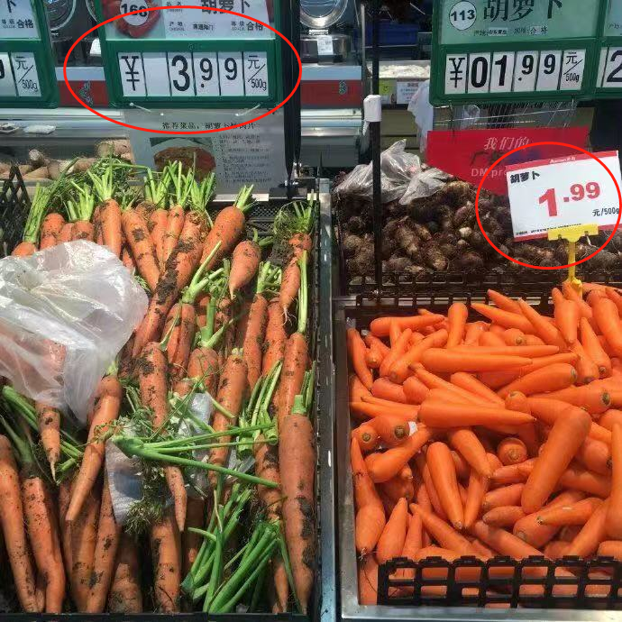
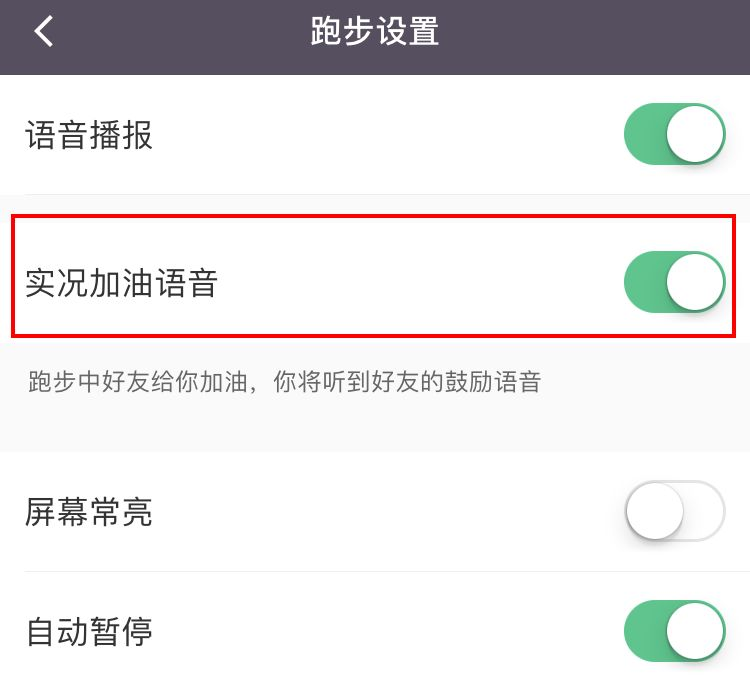
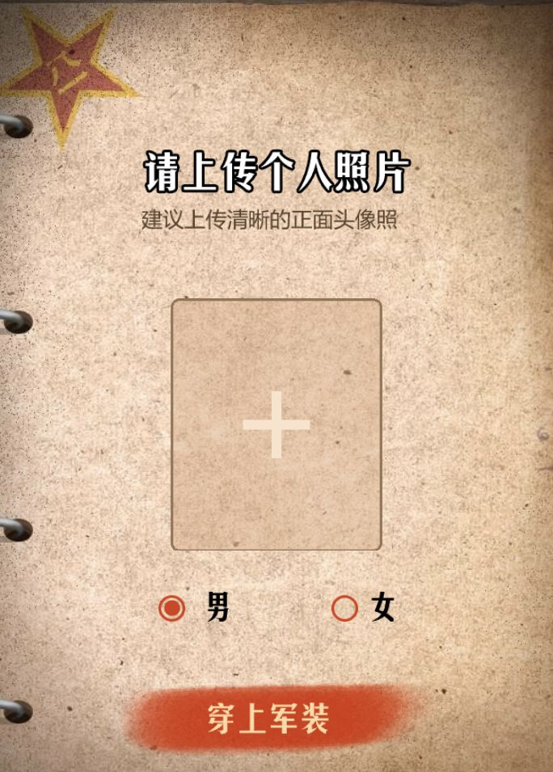
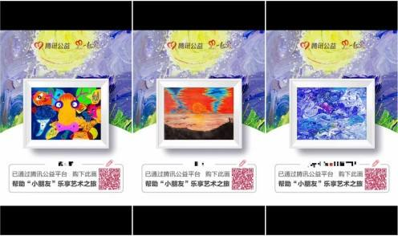
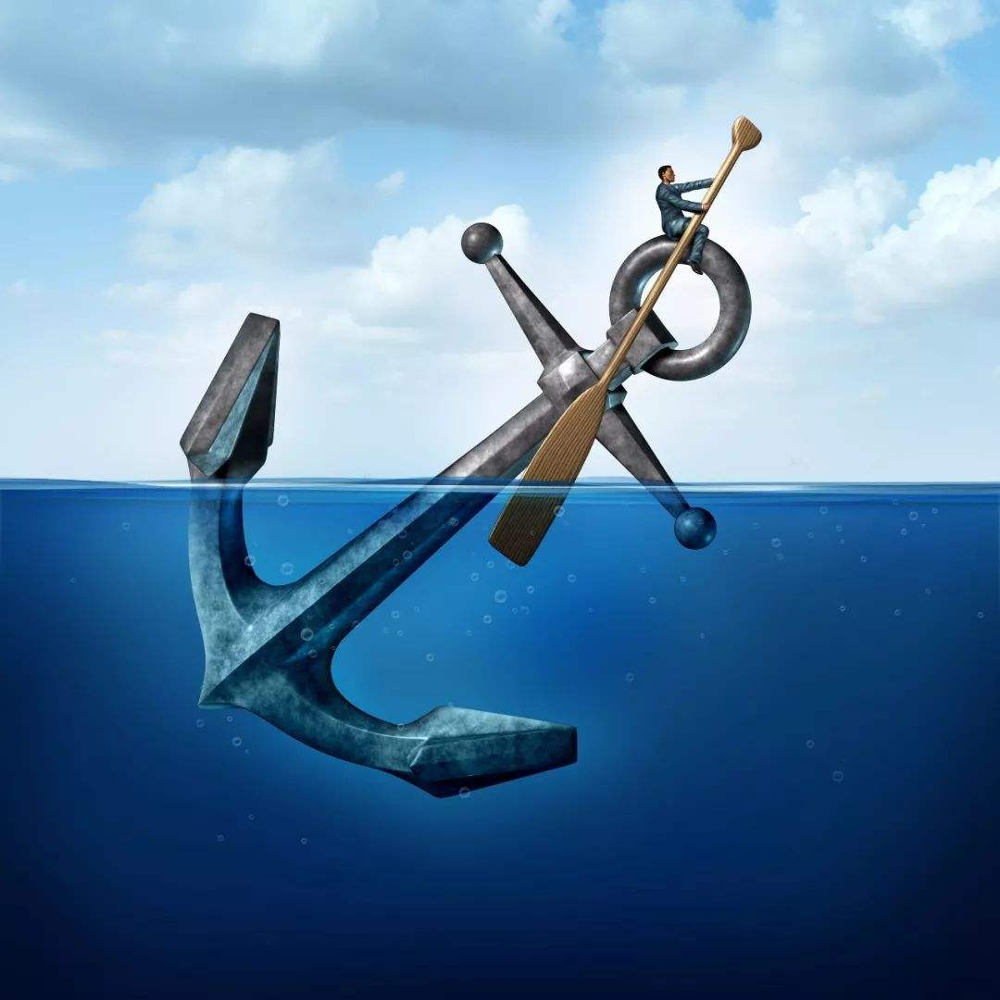

说有个人想要买把螺丝刀，他到了第一家五金店，说：老板，我要一把螺丝刀。老板拿出３种螺丝刀，跟他讲：这个是便宜的，８块，这个贵一点，１０块，这个是最好的，１５块。这个人买了一把10元的螺丝刀。紧接着他又在街上逛，他心想：似乎还要买一把长一点的螺丝刀。他又看到了一家五金店，进去对老板说：老板，我要一把长点的螺丝刀。这个老板说：先生，只买螺丝刀不是很浪费？以后家里用到一样工具，你跑出来买一样，多麻烦啊。我们店里有家用的五金工具箱，这些工具以后家里都用得着，特别实用，而且，您一整套地购买，还可以省不少钱呢。这个人一听，哎，有道理哦！于是他花了500多元买了一套工具箱。你看，同样的客户，同样的需求。第一家店的老板，只卖出10块钱，第二家店的老板，卖了500多元，是第一家店的50倍还多。为什么会有这么大的差距？因为第一家店的老板，只是单纯卖货的。而第二家店的老板，深入了解客户的需求，利用的客户“怕麻烦”心理、“占便宜心理”，从而卖出更高价的产品。那我们再来看一张图，这是一张看似很普通的超市蔬菜区的图片。

但是，仔细一看，你会发现两种胡萝卜的价格不一样，左边裹着土的丑萝卜售价3.99元/500g，而右边洗得干干净净的萝卜售价1.99元/500g。那么问题来了，这个时候你会买那边的？
那如果左边的胡萝卜挂上海报写着：“不加农药的胡萝卜就是丑了点”或者“农地里刚拔出来的，就长这样”，类似这样的文案，你又会选择那边呢？我想大家心里面也有答案了。
其实有人常说：这个世界上最难的事情有两件，第一件事就是：把你的想法，放进别人的脑袋。 另外一件事情就是：把别人的钱，放进你的口袋。做营销，恰恰是把这最难的两件事都包括了。一方面我们要把品牌信息放进客户的脑袋，另一方面，我们还要努力地把客户的金钱放进自己的口袋。而优秀的营销人，就是要善于识别人性，利用客户的人性心理，读懂客户，弄懂客户所思所想，这就是所谓的营销心理学。
营销心理学不仅仅是对顾客需求的了解，更强调与顾客沟通、互动，真正进入顾客的内心世界，使营销创意（产品策略创意、品牌创意、广告宣传创意、企业形象创意等）真正能与顾客达到心灵的共鸣。
那么，在营销心理学领域，有哪些比较典型的心理学效应呢？
01
| 罗森塔尔效应
· 罗森塔尔效应强调的是正向激励的重要作用。品牌对用户的夸赞与认同，可以增加他们的自信心，为了达到他人的高预期，用户会努力完成目标。Keep是一款健身App，它的文案中就用到了罗森塔尔效应。主页面就打出“自律给我自由”的Slogan，在用户使用过程中，可以收到粉丝或朋友的加油语音。同时App也会在适当节点给予用户鼓励，如“您已跑步4公里，用时40分钟，加油哦”！

Keep的激励性文案无疑提高了用户主动参与的积极性，也助力该应用吸引更多粉丝，上线一年半获得3000万用。

“人民日报”出品过的H5也是同样的道理，通过唤醒读者自豪感，促使用户主动转发。每张合成的照片都很好看，也达到了塑造个人形象的效果。该效应启示媒体人不要吝啬对用户的夸赞和认同，要根据用户特点打造不同的激励情景。Keep文案属于心理暗示情景，这种激励方法应用得比较广泛。除此之外，我们还可以选择“关注性情景”“共勉性情景”。“关注性情景”可以让用户获得更多关注，比如曾经刷爆朋友圈的“小朋友画廊”，用户购买残障儿童的画后分享到朋友圈，塑造一种高尚形象；“共勉性情景”营造一种相互监督激励的气氛，比如各App上的学习小组。

02
| 锚定效应&诱饵效应
· 这两种心理效应有异曲同工之妙，指的是人们在对某人某事做出判断时，易受第一印象或第一信息支配，就像沉入海底的锚一样把人们的思想固定在某处。

具体来说，为了降低用户对某种营销方式、产品的抵抗情绪，可以先抛出一个“诱饵”或者“锚”，在读者心里定下一个标准，继而引出真正的卖点。
这种营销方式的巧妙之处在于，用户自然觉得“捡了大便宜”。
比如很多杂志的订阅套餐都会标注原价，这种折扣营销方法就应用了“锚定效应”。